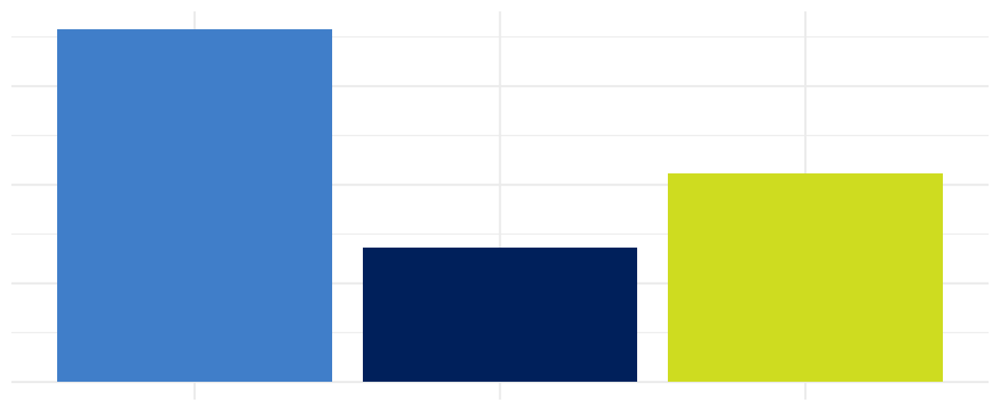
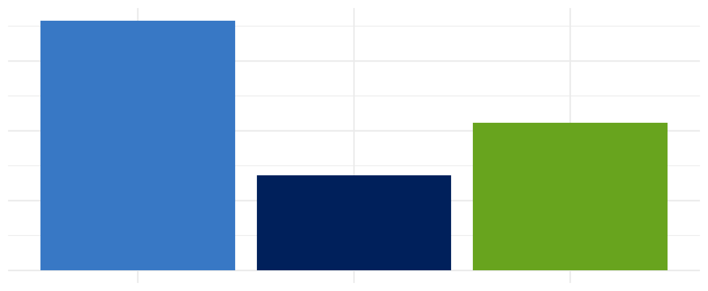

library(nisracolours)
library(ggplot2)
theme_set(theme_minimal(base_size = 12))The official NISRA colours (shown on the left in the charts below) are limited in number and can cause accessibility problems in charts.
df <- data.frame(
group = c("Employed", "Unemployed", "Inactive"),
rate = c(0.716, 0.423, 0.272)
)
ggplot(df, aes(group, rate, fill = group)) +
geom_col() +
scale_fill_manual(values = old_colours) +
guides(fill = guide_none(), x = guide_none(), y = guide_none()) +
labs(x = NULL, y = NULL)
ggplot(df, aes(group, rate, fill = group)) +
geom_col() +
scale_fill_discrete_nisra() +
guides(fill = guide_none(), x = guide_none(), y = guide_none()) +
labs(x = NULL, y = NULL)
